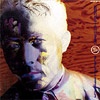
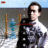
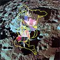

strange music page
japanese strange music * * * p-model arround
#P-MODEL周辺と平沢ソロアルバムです。最近あまり出てないけどDIW/SYUNから一時期P-MODEL関係の音源が大量にリリースされてました。
- 平沢進
- 平沢進 ＋ 田中靖美
- MANDRAKE
- 不幸のプロジェクト
- 旬
- IKARI
- 至福団
- 中野テルヲ
- Global Trotters
- PHNONPEN MODEL
- 上領亘
#平沢進の1989年の1stソロ・・・って持てなかった訳じゃ無いんだけど、誰かに貸したまんまどっか行っちゃったので買い直し。個人的にはもー鼻汁が出る程懐かしいです。
「外国人が日本料理の写真を見て一生懸命日本料理を作ってみたんだけど、なにか途轍もないものが出来てしまった」よーな作品だと思ってます。無理矢理ポッポスとして成立ってるし、ヘンなんだけどちょっと普遍的な魅力も有るような。「金星」とか「P-MODELってナニ？」って人に聞かせてみたい。（そいえば福間未紗がライヴでこの曲歌ってたの思い出したよ）
そして最近の平沢の音楽を視聴して「はぁぁぁぁ・・・」なんて思ったりするんですけど。 仕事場はタブー ダッダッ♪(2004.3.16)

- ハルディン・ホテル
- 魂のふる里
- コヨーテ
- ソーラ・レイ
- 仕事場はタブー
- デューン
- フローズン・ビーチ
- 時空の水
- スケルトン・コースト公園
- 金星
- 平沢進 (all instruments)
- 友田真吾 (drums on 7.10.)(percussions on 3.)
- 今堀恒雄 (bass on 9.)
- Matsumoto Kayo (piano on 8.)
- Yoshizawa Minoru (krumme horn on 1.)
- 金子飛鳥ストリングス (strings on 2.)
- ケラ (chorus on 3.)
- 戸川純 (chorus on 5.)
- 神尾明郎 (chorus on 1.)
- Furukawa Masahiro (chorus on 1.)
- Makanae Hisayuki (chorus on 1.)
- 秋元一秀 (chorus on 1.3.)
- Michael Saturnus (chorus on 1.3.)
POLYDOR: HOOP-20343 (1989.9.1)
#2枚目。基本はあくまでポップですが、他のどんなアーチストにも似ていない曲が並びます。P-modelともまた別な独特な世界です。

- 世界タービン
- ロケット
- フィッシュソング
- カウボーイとインディアン
- QUIT
- アモール バッファー
- 夢見る機械
- テクノの娘
- FGG
- 平沢進 (all instruments,vocals)
- 戸川純 (chorus on 2.4.)
- 梅津和時 (sax,noises on 4.)
- 秋元一秀 (bass on 3.)(chorus on 2.)
- 友田真吾 (drums on 3.)
- 秋山勝彦 (chorus on 2.)
POLYDOR: POCH-1009 (1990.5.25)

- 嵐の海
- バンディリア旅行団
- 我が心の鷲よ月を奪うな [プラネットイーグル]
- ヴァーチュアル ラビット
- UNDOをどうぞ
- 山頂晴れて
- 静かの海
- 死のない男
- 太陽の木
- ロシアン トビスコープ
- 平沢進 (vocals,guitars,programming)
- 内田輝strings (strings on 2.)
- 高橋"BOB"敏彦 (fretless bass on 3.9.)
- 戸川純 (backing vocals on 6.)
POLYDOR: POCH-1084 (1991.5.25)
- FGG
- ハルディンホテル
- ソーラ・レイ
- コヨーテ
- デューン
- 仕事場はタブー
- スケルトンコースト公園
- 金星
- 世界タービン
- フィッシュ・ソング
- Quit
- Oh Mama !
- ロケット
- 平沢進 (guitars,vocals)
- 友田真吾 (drums,percussions)
- 秋山勝彦 (bass,backing vocals)
- ことぶき光 (keyboards,backing vocals)
- 秋元一秀 (keyboards,backing vocals)
- 梅津和時 (wind synthesizer,pipe)
#1枚目～3枚目のソロからのベストアルバム、しかし「the essence of...」ってどこかで聞いたような名前のつけ方...
- 魂のふる里
- カムイ・ミンタラ
- 嵐の海
- Fish song
- 山頂晴れて
- 金星
- ハルディン・ホテル
- Rocket
- スケルトン・コースト公園
- Virtual rabbit
- バンディリア旅行団
- 平沢進 (guitars,programming,synthesizers,vocals)
- 金子飛鳥strings (strings on 1.)
- Teru Uchida strings (strings on 11.)
- 友田真吾 (drums on 4.6.)
- 秋元一秀 (bass on 4.)
- 今堀恒雄 (bass on 9.)
- Minoru Yohizawa (krumme horn 7.)
- 戸川純 (vocals on 5.8.)
- 秋山勝彦 (chorus)
- Toshihiko Takahashi (chorus)
- Kazuhiko Fujii (chorus)
- 藤井ヤスチカ (chorus)
- recall
- archtype engine
- lotus
- kingdome
- echoes
- sim city
- 月の影
- 環太平洋疑装網
- colony
- caravan
- prologue
- 電光浴-1
- サイレン "Siren"
- On Line Malaysia
- Siren "セイレーン"
- Nurse Cafe
- Holy Diver
- Gemini
- Day Scanner
- Siam Light
- 電光浴-2
- Mermaid Song
Nippon Colombia/TESLAKITE: COCA-13571
- DETONATOR ORGUN
- KUMI Jefferson
- E.D.F.
- YOHKO Mitsurugi
- EVOLUDERS
- City-No.5
- MICHI Kanzaki
- P.A.S.F.U.
- PROPAGANDA of E.D.F.
- MUSEUM
- FUHRER MEEK
- バンディリア旅行団 (Physical Navigation Version)
POLYDOR: POCH-2025 (1991.7.25)
#同名アニメのサントラ３枚目、魂のふるさとを収録、他の曲はBGMっぽいものが多い。
- DETONATOR ORGUN
- PROPAGANDA of E.D.F.II
- DREAM QUEST
- DUAL MIND
- TOMORU & MICHI
- 時空の水 (full size)
- ZORMA
- SPACE FORCE
- CLIMAX
- HOPE
- 魂のふる里
POLYDOR: POCH-2027 (1992.3.25)
- BEHELIT
- Ghost
- Ball
- Gats
- Murder
- Fear
- Monster
- EARTH
- BERSERK -Forces-
- TELL ME WHY
- Waiting so long
vap: VPCG-84639 (1997.11.6)
#P-model結成直前のプロジェクト。テクノポップ的な音色によるバロック音楽みたいなかんじです。マンドレイクからP-modelに移行するためのテストケースみたいな状況が伺えます。
- 主よ、人の望みの喜びよ
- 配線上のアリア
- かっこう
- めんどり
- 恋の夜鳴きうぐいす
- キタイロンの鐘
- アルビノーニのアダージョ
- マルチェッロのアダージョ
DIW/SYUN: SYUN-005 (1994)
#P-modelの前身バンドの発掘もののＣＤ、個人的にはもっとP-model寄りの音楽かと思っていたのですが、本当にプログレしてたので驚きました。4曲目などは73年の録音だそうでメロトロンなども大量に使っています。
KING CRIMSON + VAN DER GRAAF GENERATORって感じですかね、物凄く構築系のプログレ。確かにこのままの音で80年代に突っ込んで行ったら行き詰まって終わっちゃってたんだろうなと思います。ここからP-modelに音をひっくり返す事ができたのが平沢さんのスゴかった所なんだろーなと。まぁ遠い昔の話なんでしょーが。
- 飾り窓の出来事
- 終末の果実
- 犯された宮殿
- 錯乱の扉
- 平沢進 (guitars,vocals)
- 田中靖美 (keyboards)
- 田井中偵敏 (drums)
- 阿久津徹 (bass)
- Abe Fumiyasu (vocals,violin on 4.)
MARQUEE/BELLE ANTIQUE: BELLE-97343 (1997.3.25)
#P-modelの前身バンド"MANDRAKE"の発掘音源その2。一番近いのは日本のコスモスファクトリーかもしれないです。４曲目は平沢進のシンセ曲。
- MANDORAGORA
- TALES FROM PORNOGRAPHIC OCEAN
- 流れの果てに
- いりよう蜂の誘惑
- 平沢進 (guitars,vocals)
- 田中靖美 (keyboards)
- 田井中貞敏 (drums,percussions)
- 阿久津徹 (bass)
MARQUEE/AVALON: MICA-2001 (1997)
#小西健司と平沢進によるプロジェクト、これも過去の音源。とても格好良いです。こんだけこの二人のユニットが良いのに、なんで小西さん加入以降のP-modelにパッとしたのが無いんだろう....不思議だす。
- 四次元院の憂鬱
- 不幸 其の壱
- 不幸 其の弐
- 不幸 其の参
- 局留め不幸
- 不幸 其の五
- 不幸 其の六
DIW/SYUN: SYUN-013
#平沢進さんのプロジェクト"旬"の昔出ていた物のダイジェスト。内容の方はサンプラーを使えなかった頃のサンプリングの実験と言った所でしょうか。
新しい旬のCD、LANDSCAPEとかKUNMAEとかよりはずっと面白いです、これ。
- L-LOCATION
- CONDITIONING CYCLE
- 1778-1985
- TABLE BEAT (RESPONCE VERSION)
- TABLE BEAT (PARADIME VERSION)
- LOCATION
- SIPHON
- SYUN II
- PAE
DIW/SYUN: SYUN-001 (1993)
#弟の持ち物。フラクタル理論による音らしいです....きっとそうなんだろうなと思っていたのですが.....ネムイ....
うぅ、でも最近の平沢仕事に比べりゃマシなのかも....なんて事書くと怒られるかな？(2000.12.5)
- Landscape-1
- Landscape-2
- Landscape-3
- Landscape-4
DIW/SYUN: SYUN-006 (1993)
#旬の映像版、旬の曲をバックにサイケな映像が流れ続ける、ずーっと見ていたら寝てしまいした。
- LOCATION
- SIPHON
- SYUN II
- PAE
DIW/SYUN: SYUN-010 (1995)
#旬の新作。平沢進さんのアジア方面への傾斜が伺えます。また眠くなっちゃいました。
- kun mae #1
- kun mae #2
- kun mae #3
- kun mae #4
- 平沢進
- sacol trakranprasirt
- sapat kuntatun
DIW/SYUN: SYUN-011 (1996)
#旬とかとたぶん同時期に出ていたソノシートです。なんかビート系のバンドみたいな音でした。2曲目は平沢さんが弾いてるのかわからないですが、ギターが変なソロで盛り上がってました。ディスクユニオンで物珍しさに負けて\2,000で買いましたが、内容の方は?でした。
- LUCKY TIME
- NO PERSPECTIVE
- 平沢進 (guitars,white noise)
- 三浦俊一 (guitars,rhythm box)(music on 1.)
- M.Hirose (voice)(music on 2.)
MODEL HOUSE: RBF-107
#なんだか結構良いんです。4Dの小西健司とINUの北田昌宏の...やっぱ過去音源なのかな？北田昌宏て知らないけど。
今手もとにある小西健司関係のCDで一番好きかもしれないです。砂袋で後頭部を殴られるような快感、でもポップ。
- 致富譚
- ジュテーム
- 兵児帯
- 好きさ好きさ好きさ
- 牛追い
- 浅い川
- ブラック・モスレム
- 小西健司
- 北田昌宏
- 横川理彦 (bass on 4.)
- fukushin ! (bass on 7.)
DIW/SYUN: SYUN-012 (1996)
#後期のメンバーの中野テルヲさん(元ロングバケーション)のソロアルバム。ポップでエレクトロで違和感のある音楽。
- UHLANDSTR ON-LINE
- TRANCE-PAUSE ROOM
- コンダクタープラス
- MISSION GOES WEST
- ウーランストラッセ節
- RUN RADIO I
- CALL UP HERE
- RUN RADIO II
- RUN RADIO III
all music written,performed,produced by 中野テルヲ
DIW/SYUN: SYUN-015 (1997)
#平沢進に小西健司に、あのCLUSTERのHans Joachim Roedeliusが参加したCD(他の3人の外人は知らない)。なんでもインターネット上で小西健司とRoedeliusがコンタクト取ってやり始めた企画らしいです。今や何でもアリの時代ですね。
音のほうはとりとめの無い内容かと思ってたんですけど、意外と面白かったです。テクノ/トランスの音なんですけど、アプローチの仕方がいわゆる"テクノ"な人と全然違ってて面白いです。やっぱ根はロックかな？3曲目の"Drive"のシーケンスなんて最近のHAWKWINDにも似てるような.... (1999.9.12)
- Parallel Motives
- Tribal Engine
- Drive
Bonus Track
- Tribal Engine "Neuromask Mix"
- 平沢進
- 小西健司
- Hans Joachim Roedelius
- Alquimia
- Felix Jay
- David Bickley
MAGNET/biosphere: BICL-5011 (1999.3.25)
#解凍後の
P-modelに参加してたことぶき光さんのバンド。
エコーユナイトの少年マルタさんがvocalで参加しています、ちょっとこの人のボーカル、癖有り過ぎてあまり好きじゃないんですけどね。
曲調はその頃のP-modelの音といえば分かりやすいかも、ピコピコでエスニックで、かつポップです。すっげー変な音楽。
- 産業音楽
- 生と死と私と
- 幼形成熟box
- D.T.H.L.
- 千年ナーガ
- 鳥葬～a.jet 69
- 八幡 to SPIRAL
- ルルル男
- アポロベトナム
- 時限時報
- ことぶき光 (keyboards,vocals)
- ライオンメリー (keyboards,kalimba,vocals)
- 少年マルタ (overtone,vocals)
- thaniya patpong (guitars,mandolin,vocals)
DIW/SYUN: SYUN-004 (1994)
#えーと高円寺のmarbletronでTGV(DJパーティ)行った時に岸野さん(ヒゲの未亡人)が何故かCDを\500でガレージセールしてて購入。ことぶき光さんのCDです、上のDESK TOP HARD LOCKよりバラエティ増えたかな?ドラムンベースみたいな曲も有ります。基調は変わって無いんですけど、なんだかこなれて来た感じです。"変"さも2割増くらい。(2000.9.15)
- 龍の泡
- 麗しのガンガンハラ
- 招き猫
- 印(しるし)
- ラーガ・ポップ
- 赤塊(せきかい)
- ひぐま
- ベロニカ
- 空と海と濃いと筆売り
- また放り出されて
- 楽器をなでて
- パレード
- トラック
- 泥棒の歌
- 雲居神(くもいしん)
- エアロ・グル
- 秋津島
- ことぶき光 (victory3000,keyboards)
- ライオンメリイ (piano,programming,keyboards)(vocals on 7.13.)
- 谷口正明 (vocals,guitars,DAT)
- 熊切寛[nerve net noise] (system bluewink on 14.)
- すずえり (toy piano on 6.)
- 植草久明 (didgeridoo on 6.13.)
CAPTAIN TRIP RECORDS: CTCD-097 (1998)
#Grass Valley、Soft Ballet、P-Modelなどで活躍していたdrumsの上領亘のP-model在籍時に出したソロアルバム。元Zabadakの
上野洋子や
平沢進さんなどが参加しています。わりと普通の歌ものですGrass Valleyに近いような？平沢さんは１曲目からいきなりRobert Frippみたいなギターを弾いてます。
- voix
- 鴉
- 風
- LIGHTS ON MY SHADOW
- I love you
- 君
- Because of love
- Fascination
- 雨
- MAY
- 上領亘 (vocals,drums,keyboards)
- 平沢進 (guitar solo on 1.2.)
- 上野洋子 (voices on 1.9.10.)(vocals on 6.)
- 石塚伯弘 (guitars)
- 森岡賢 (piano on 6.)
- 福間創 (synthesizer programming)
- MOMO (synthesizer programming)
- IMASA (guitar on 5.)
- 久滋弘子 (keyboards on 10.)
Nippon Colombia/TESLAKITE: COCA-13745 (1996.10.19)